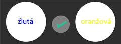
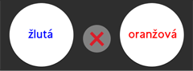

The game has three levels of difficulty. At the easiest level (only one tin), the player must determine if the color of the text corresponds to the meaning of the text.
At the second level (2 tins), the player’s task is to decide if the color of the text on the right tin corresponds to the meaning of the text on the left tin, see the picture for explanation: 
On the left tin, the word “yellow” is written while the text on the right tin is of yellow color. The correct solution is YES. 
The word on the right tin is not written in yellow color, therefore the correct answer is NO. In addition to that, at the hardest level (2 tins), every answer has a time limit, thus the player must answer within 2 seconds.